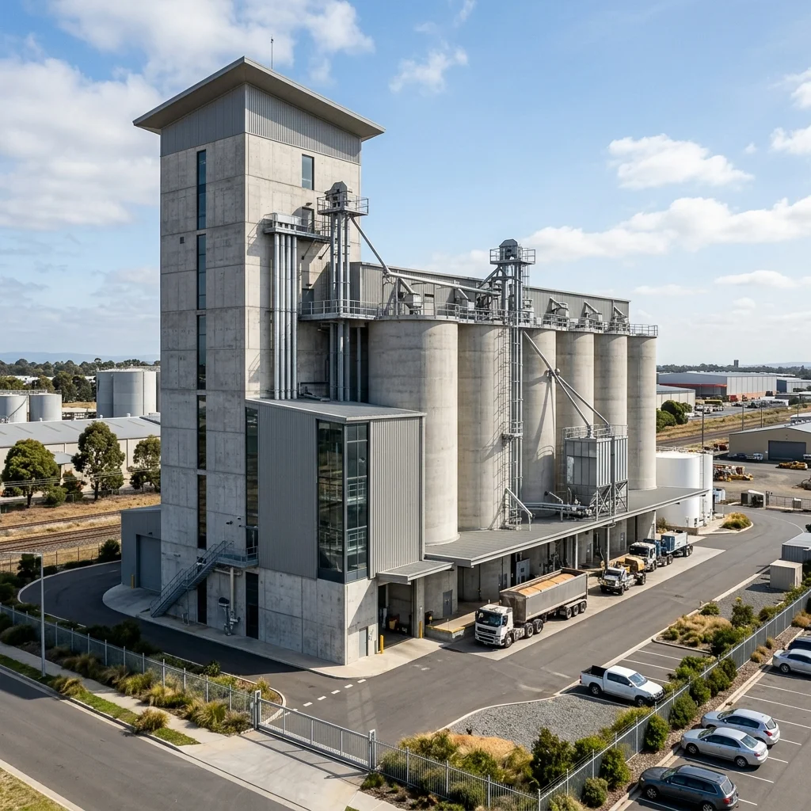
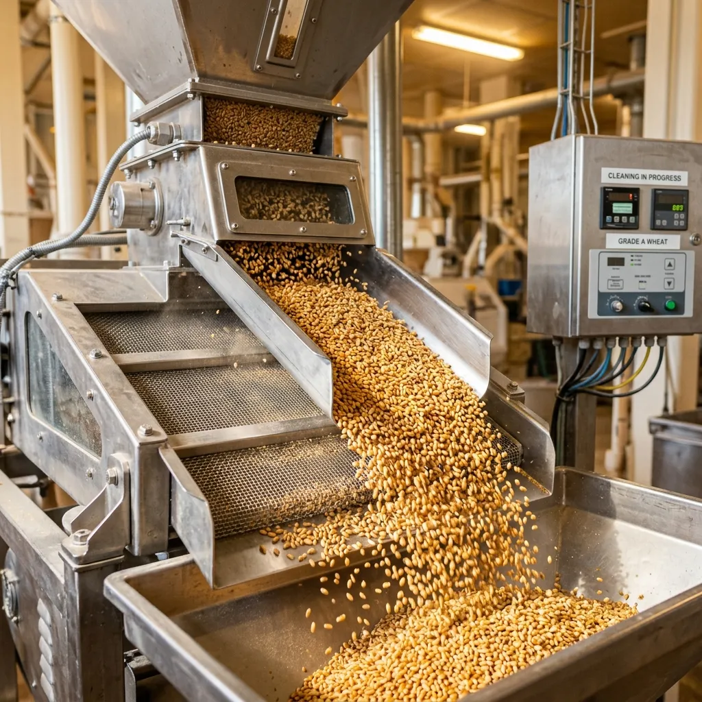
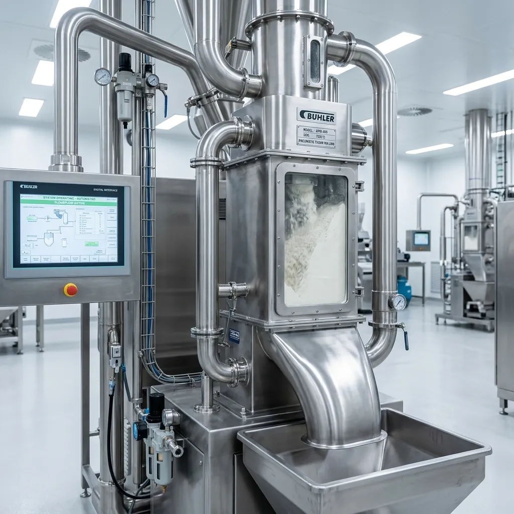
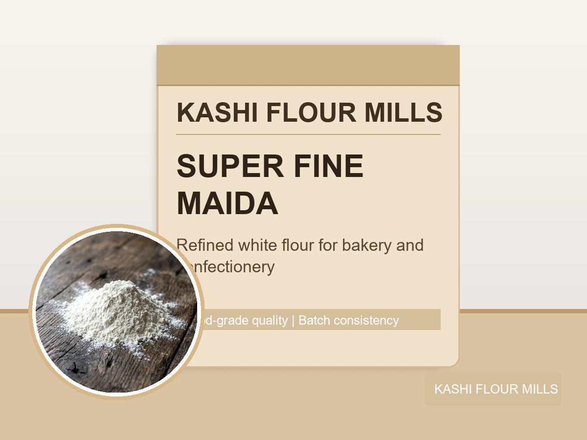
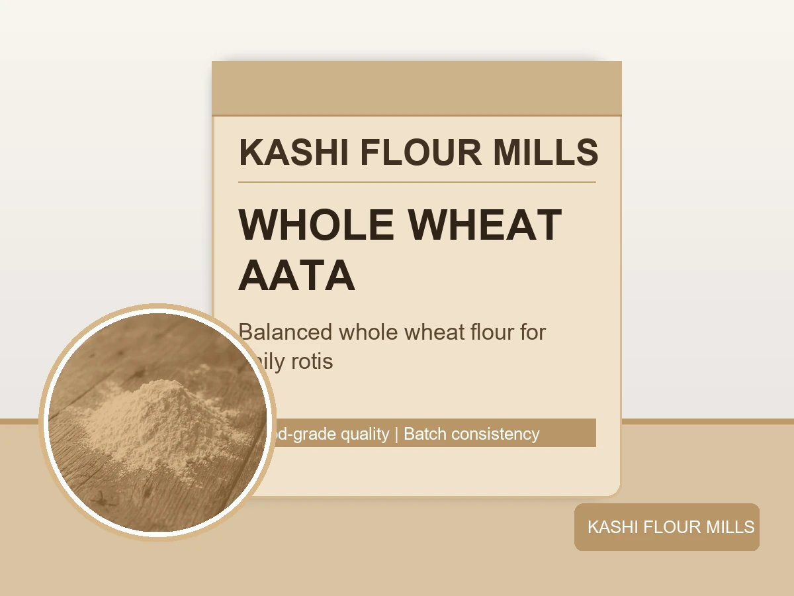
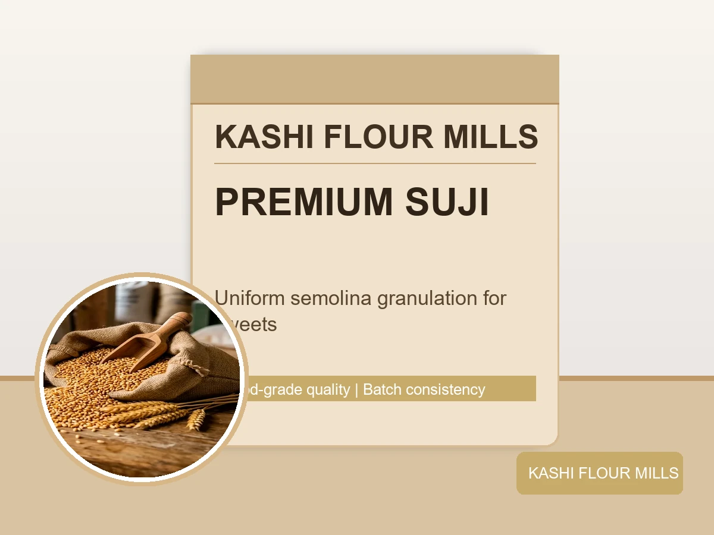

Kashi Flour Mills delivers food-grade Maida, Aata, and Suji through fully controlled milling, trusted sourcing, and dependable batch quality for households and bakeries.

Based in Quetta Industrial Estate, Kashi Flour Mills combines modern equipment with disciplined quality checks to serve bakeries, retailers, and distributors across the region.
From wheat intake to final packing, our process is designed for consistency, hygiene, and dependable flour performance in daily use.
Learn Our HistoryEvery batch passes through controlled sourcing, cleaning, tempering, grinding, and final screening to maintain stable texture, moisture, and performance.

Selected wheat is inspected and passed through multi-stage cleaning to remove dust, foreign particles, and impurities before tempering.
Controlled moisture conditioning prepares kernels for clean separation, helping produce uniform flour with reliable absorption and handling characteristics.

Tempered wheat moves through enclosed pneumatic systems and precision rolls for consistent particle size and clean extraction.
Routine in-process checks verify each batch meets practical baking standards before final packing and dispatch.

Refined white flour developed for soft crumb structure, smooth dough handling, and consistent bakery output.
View Product
Nutrient-rich whole wheat flour with reliable water absorption, ideal for daily roti and traditional flatbread production.
View Product
Uniform coarse granules with clean color and texture, suitable for halwa, pasta, and specialty baked products.
View ProductAutomated production with controlled handling helps maintain food-safe standards from intake to packaging.
Batch checks on moisture, gluten behavior, and texture ensure dependable flour performance in commercial use.
Scalable output and straightforward dispatch planning for retailers, bakeries, and regional distribution networks.